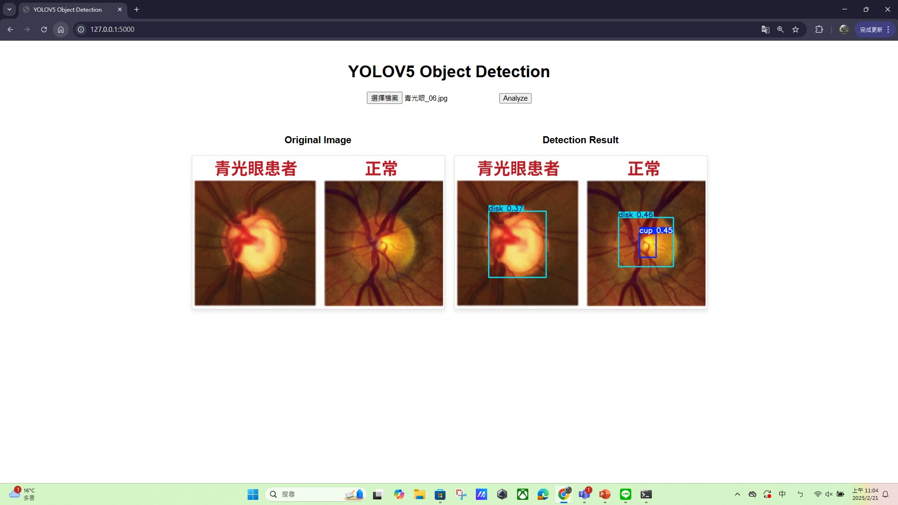
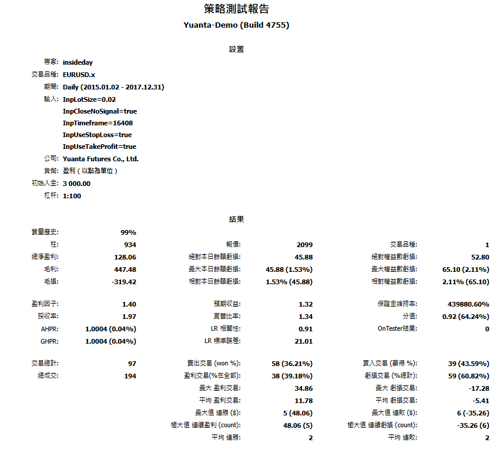
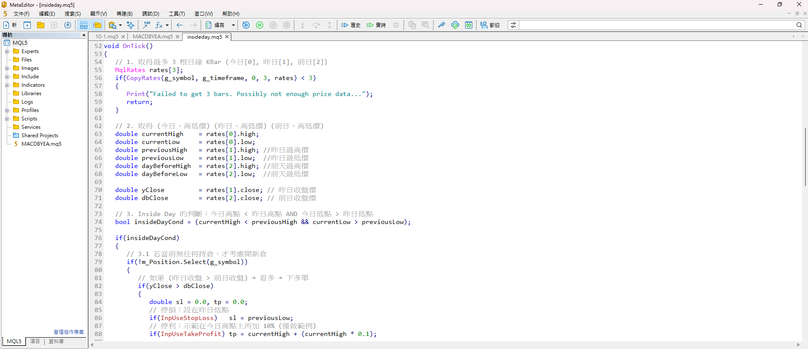
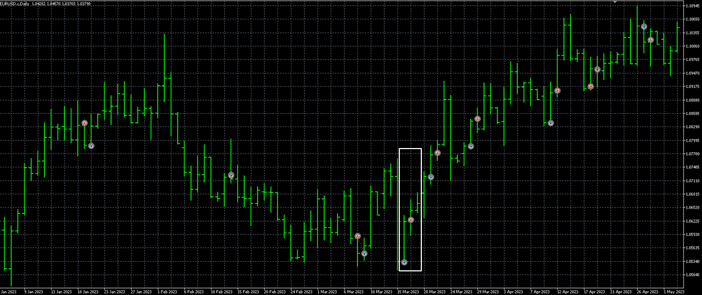

青光眼檢測code請按我
青光眼檢測專題介紹PDF檔請按我

點餐機系統
以下是我的第2個專題，是利用JavaScript的React框架所做的點餐機系統，這個點餐機所用到包含了資料庫建置，以及插入messenger快速回覆機器人，
以及悠遊付的行動支付，近年來由於地球環境影響，為了不要過度使用紙張而導致過度開發森林，盡量都把內容資訊化，而我們做點餐機，
只要印出一張QRcode，讓user透過掃描能夠使用自己手機的browser進行點餐，除了減少紙張使用，如果透過行動支付付費，在這疫情肆虐的時代，
也能減少人與人之間的接觸。
點餐機系統展示請按我
點餐機專題介紹PDF檔請按我

基於 InsideDay 策略的 EUR/USD 交易績效分析
這份Project是使用許多國內外證卷商都有提供的MT5虛擬交易平台，利用 MT5 平台 回測 InsideDay 交易策略，
針對 EUR/USD 進行日線級別交易，評估其在不同市場環境下的績效表現。回測結果顯示，該策略在 2015-2017 年 期間表現較佳，
總獲利達 $128.06，收益因子為 1.40，勝率約 36.21%，雖然不算高，但透過較佳的盈虧比（每次獲利交易的平均收益高於虧損交易），
仍能維持獲利，最大回撤僅 6%，顯示該策略能夠有效控制風險，避免過大資金波動。
程式交易code請按我


